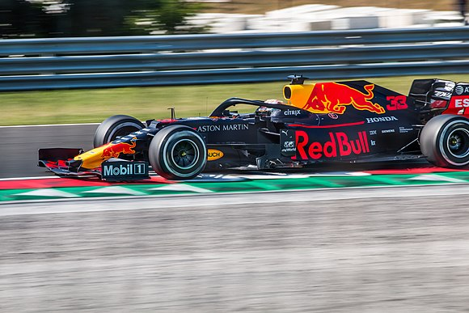

Tarihçe
Cosworth Motorları
2005 Sezonu
2004 yılında Jaguar (eski Stewart Grand Prix takımı) takımını satın alarak katıldığı Formula 1'de iyi bir performans gösterdiler. İlk iki yarışta önceki sezon Jaguar'ın aldığı toplam puandan daha fazla puan alıp sezonu 7. sırada tamamladılar.
Ferrari Motorları
2006 Sezonu
Red Bull Formula 1'deki ikinci sezonunda, ilk sezona göre daha kötü bir performans sergiledi. Ferrari motoru kullanılmasına karşın önceki sezona göre 18 puan daha az toplayıp, kardeş takımı olan Toro Rosso'ya mücadele etmiştir. Sezonu 16 puanla 7. sırada tamamladılar.
Renault Motorları
2007 Sezonu
Takımın Ferrari ile olan sözleşmesi Toro Rosso'ya aktırıldıktan sonra yeni sezona Renault motoru ile devam etmiştir. Adrian Newey'in tasarladığı araç, sezonun ilk yedi yarışında otomobillerden en az birinde arıza çıkarmıştır. Sezona kötü bir başlangıç yapan Red Bull sezon ortası güncellemeleri yapıp ve güvenlik sorunlarını gidererek sezonun daha da kötü olmasını engellemiştir. Mark Webber'in üçüncü ve David Coulthard'ın beşinci sırada bitirdiği Avrupa Grand Prix'i en başarılı yarışları olmuştur. Red Bull sezonu 24 puan ile 5. sırada tamamlamıştır.
2008 Sezonu
Aynı şasiye sahip olan RB4 aracı ile sezona başlayan Red Bull bu sezonda Ferrari motoru kullanan kardeş takımı Toro Rosso'nun gerisinde kalmış ve önceki sezonki sıralamanın gerisine düşmüştür. Bu sezonda en başarılı olduğu yarış David Coulthard'ın Kanada Grand Prix'inde aldığı üçüncülük olmuştur. Red Bull sezonu 29 puanla 7. sırada tamamlamıştır.
2009 Sezonu
Geliştirilen RB5 aracı ve Sebastian Vettel - Mark Webber'in yüksek performansıyla Red Bull için harika bir sezon oldu. Vettel'in Çin Grand Prix'inde aldığı ilk pole pozisyonu ve zaferinden sonra sezon boyunca 5 grand prix galibiyeti daha alarak hem takımlar (153,5 puan) hem de sürücüler (Vettel - 84 puan) sıralamasında Brawn Mercedes ardından ikinci oldular.
2010 Sezonu
RB6 ile sezona başlayan Red Bull bu sezonda hem takımlar hem de sürücüler sıralamasında birinciliği elde etti. Bu sezonda Vettel beş, Webber dört olmak üzere toplam 9 grand prix zaferi alıp toplam 15 pole pozisyonu kazanmıştır. Red Bull takımlar sıralamasında sezonu 498 puanla zirvede tamamlarken, Sebastian Vettel ise Fernando Alonso'nun 4 puan önünde 256 puanla sürücüler sırlamasında birinci olmuştur. Vettel bu şampiyonlukla "F1 şampiyonu olan en genç pilot" ünvanını Lewis Hamilton'dan almıştır.
2011 Sezonu
Red Bull hem pilotlarını hem de motor üreticisini koruyarak sezona başladı. Vettel 11 yarış kazanarak sürücüler sırlamasında bir kez daha dünya şampiyonu olarak bunu başaran dokuzuncu sürücü oldu. Ayrıca sezon boyunca kazandığı 15 pole pozisyonu ile Nigel Mansell'in 1992'deki rekorunu kırdı. Markalar sıralamasında en yakın rakibi olan McLaren'a 153 puan fark atarak 650 puanla zirvede yer alıp iki kez üst üste markalar şampiyonu oldu.
2012 Sezonu
Geliştirilen RB8 motoru ile Red Bull önceki iki sezondaki hakimiyetine devam etti. Vettel 281 puan ile sürücüler sırlamasında birinci olurken, Red Bull 460 puan ile markalar sıralamasındaki birinciliğini sürdürdü.
2013 Sezonu (Infiniti Red Bull Racing)
RB9 aracı ile yine sezona hızlı başlangıç yapan Red Bull lastik bozulma hızı ile ilgili yaşadığı sorunları sezon ortasında yaptığı değişiklik ile çözüp sezon sonunda dördüncü üst üste şampiyonluğuna ulaşmıştır. Infiniti bu sezon takıma isim sponsoru olmuş ve takımın adı Infiniti Red Bull Racing olarak değişmiştir. Red Bull markalar sıralamasında 596 puanla lider olurken, Sebastian Vettel sürücüler sırlamasında 397 puan ile birinci olmuştur.
2014 Sezonu (Infiniti Red Bull Racing)
Sezona Mark Webber yerine Daniel Ricciardo'yu getirerek başlayan Red Bull önceki sezonların gerisinde kaldı. Takımlar sıralamasında Mercedes'in ardından ikinci olurken, yeni pilot Ricciardo ise sürücüler sırlamasını üçüncü sırada tamamlamıştır.
2015 Sezonu (Infiniti Red Bull Racing)
Dört kez dünya şampiyonu olan Sebastian Vettel takımdan ayrılıp Ferrari ile anlaşmasından sonra Red Bull Daniil Kvyat ile anlaşmıştır. Sezon boyunca Renault motoru ile sorunlar yaşayan Red Bull 2008 yılından sonra ilk kez galibiyetsiz bir sezon tamamlamıştır. Sezon sonunda sürücüler sıralamasında Kvyat yedinci, Ricciardo sekizinci olurken Red Bull markalar sıralamasında dördüncü olmuştur.
TAG Heuer Motorları
2016 Sezonu
2015 sezonundaki Renault motorunun arızalarından dolayı Infiniti sponsorluktan ayrılmıştır. Motor üreticisi Renault olmasına rağmen "Tag Heuer" ismi kullanılmıştır. Sezonun ilk dört yarışından sonra Daniil Kvyat yerine Max Verstappen getirilmiş, Ricciardo - Verstappen uyumu ile Red Bull önceki sezona göre daha başarılı bir sezon geçirmiştir. Sürücüler sırlamasında Ricciardo üçüncü sırada yer alırken Verstappen beşinci sırada tamamlamıştır. Markalar sırlamasında Red Bull Mercedes'in arkasından ikinci sırada yer almıştır.
2017 Sezonu
Takım 2017'de üç yarış kazandı; Ricciardo, onuncu başladıktan sonra Azerbaycan Grand Prix'sini kazanırken, Verstappen Malezya Grand Prix'sini ve Meksika Grand Prix'sini kazandı. Ayrıca Verstappen ve Ricciardo, Japonya Grand Prix'sinde ikinci ve üçüncü oldular. Sürücüler sıralamasında Ricciardo 200 puanla beşinci, Verstappen 168 puanla altıncı oldu. Red Bull markalar sırlamasında 368 puanla üçüncü oldu.
2018 Sezonu (Aston Martin Red Bull Racing)
Red Bull 2018 yılında Aston Martin ile isim sponsorluğu anlaşması yaptı. Pek başarılı geçmeyen sezon sonunda sürücüler sıralamasında Verstappen dördüncü sırada yer alırken, Ricciardo altıncı sırada yer aldı. Takımlar sırlamasında Red Bull Mercedes ve Ferrari'nin ardından üçüncü sırada yer aldı.
Honda Motorları
2019 Sezonu (Aston Martin Red Bull Racing)
Red Bull sezona takımdan ayrılan Daniel Ricciardo yerine Pierre Gasly getirildi. Ancak sezonun 12. yarışından sonra Gasly yerine Alex Albon getirilmiştir. 12 yıllık Renault motorundan sonra Honda motoruna geçilmiştir. Red Bull sezonu takımlar sıralamasında Mercedes ve Ferrari'nin ardından üçüncü tamamlamıştır. Max Verstappen sürücüler sırlamasında sezonu üçüncü sırada tamamlarken Gasly yedinci, Albon sekizinci sırada tamamlamıştır.
2020 Sezonu (Aston Martin Red Bull Racing)
Max Verstappen ve Alex Albon ile sezonu tamamlayan Red Bull sezonu Mercedes'in arkasında takım sıralamasında ikinci tamamlamıştır. Verstappen sürücüler sıralamasında üçüncü sırada yer alırken Albon yedinci sırada yer almıştır.
2021 Sezonu (Red Bull Racing Honda)
Red Bull yeni sezona yeni isim sponsoru ile başlayarak takımın ismi Red Bull Racing Honda olarak değiştirildi. Bekleneni veremeyen Albon yerine Sergio Pérez takıma dahil edildi. Sezonu Mercedes'in ardından 585.5 puanla ikinci sırada tamamladı. Max Verstappen ve Lewis Hamilton çekişmesi sezona damga vururken, sezonun son yarışına Verstappen ve Hamilton puan puana girdiler. Abu Dabi Grand Prix'inde son yarışın son turunda Verstappen galibiyeti alırken 395.5 puan ile ilk dünya şampiyonluğunu kazandı. Genel olarak iyi sezon geçiren Peréz 190 puanla Hamilton ve Bottas'ın ardından dördüncü oldu.
Pit Stop Rekoru
Red Bull takımının teknik ekibinin 2019 Brezilya Grand Prix'inde Max Verstappen için gerçekleştirilmiş olduğu 1.82 saniyelik pit stop ile bu alanda bir rekor kırmıştır. Ekim 2022 tarihi itibari ile bu süre geçerlidir.
